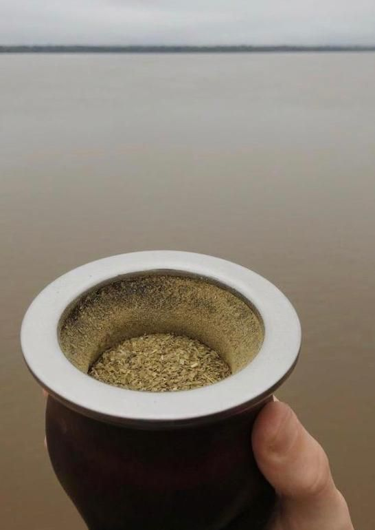
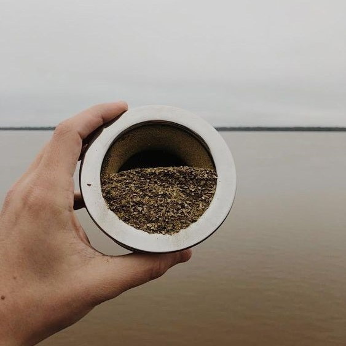
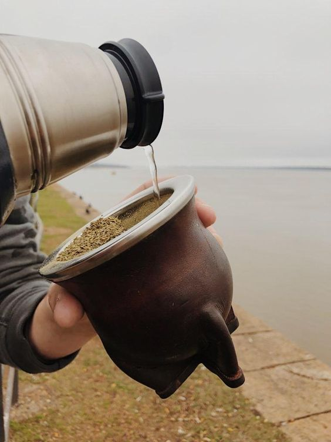
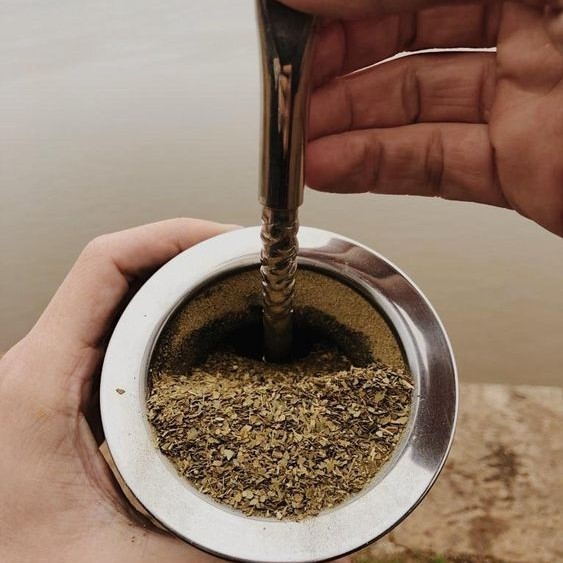
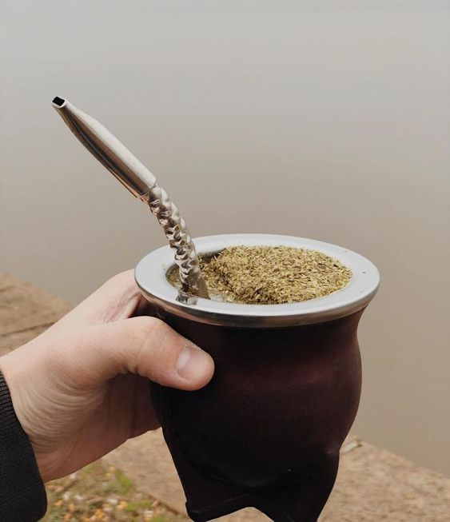

Tips Materos
como armar un mate
-
rellenar el mate con yerba hasta 3/4 del mismo
 -
tapar la boca del mate con la mano e inclinarlo a 45 para luego retirarla hacia arriba sin dejar de mantenerlo inclinado
 -
colocar agua en el espacio creado en el lado opuesto a la montañita
 -
colocar la bombilla en el espacio donde echamos agua
 -
el mate ya esta listo para disfrutar
